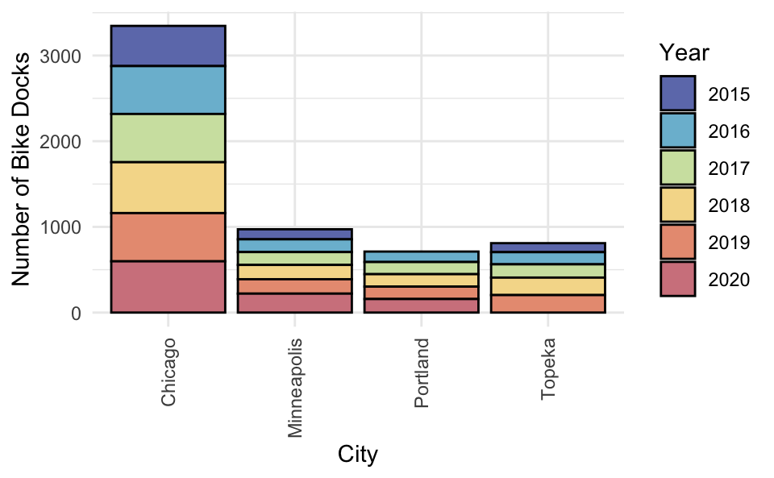
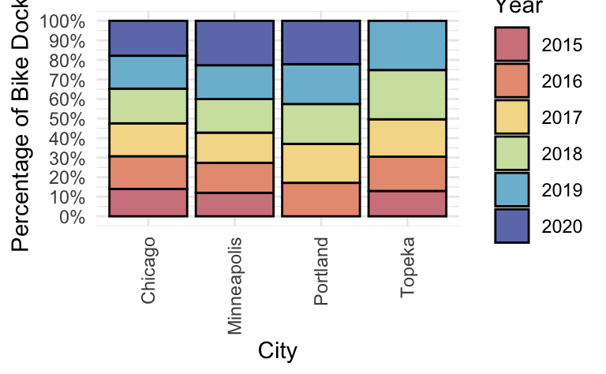
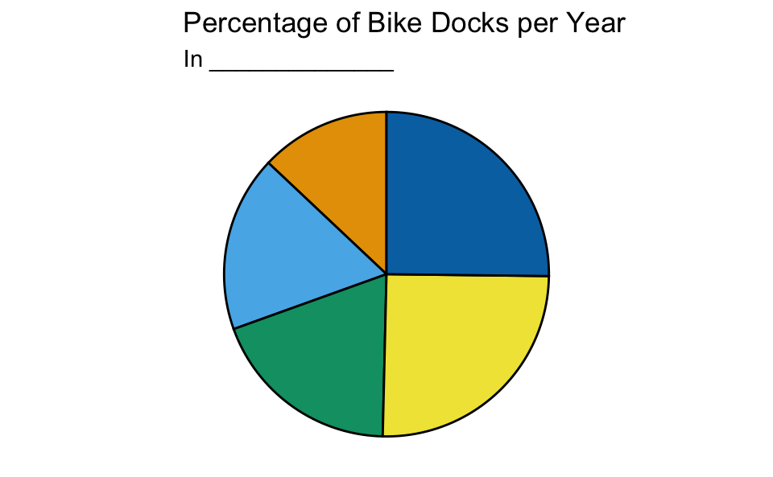
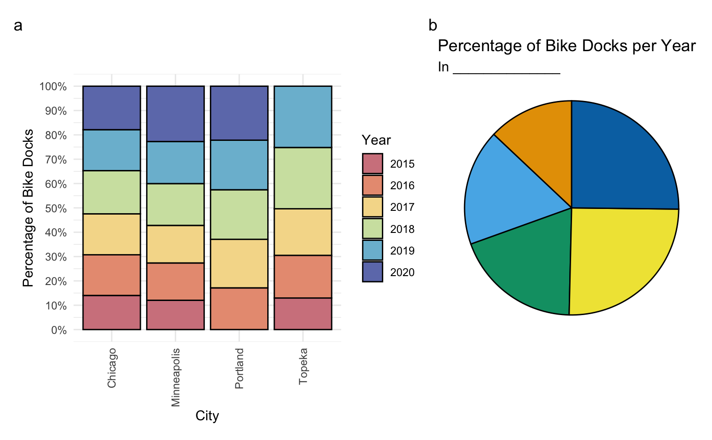
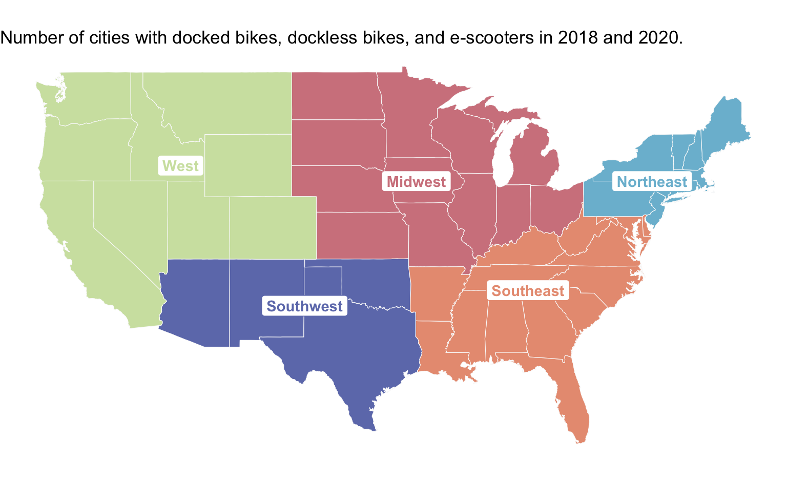
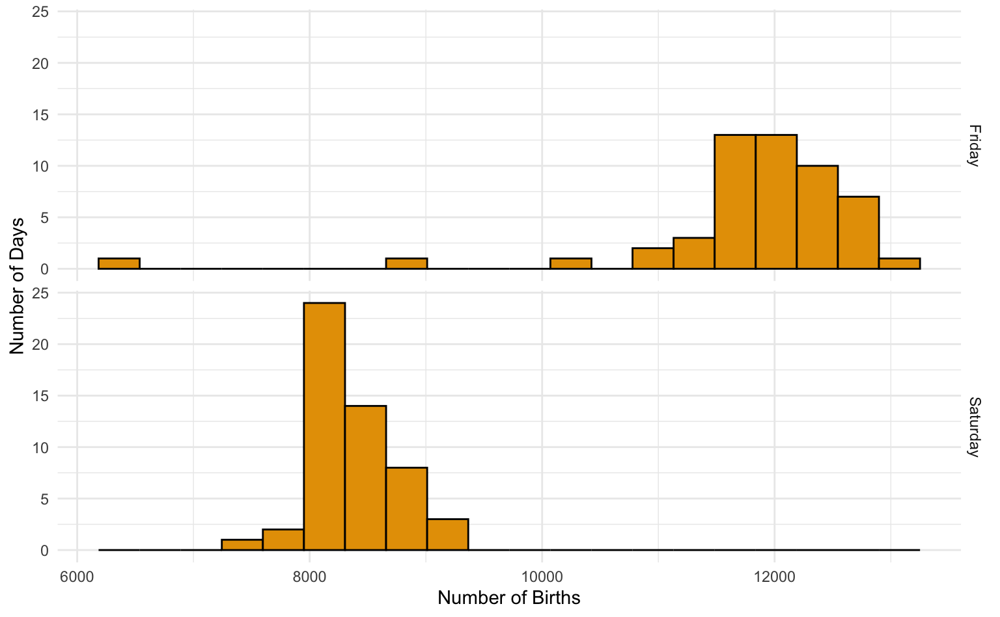
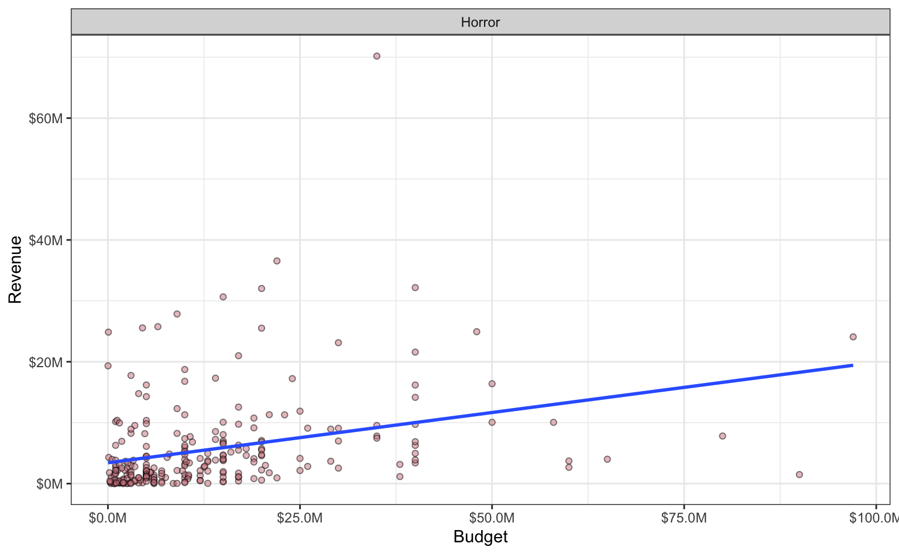
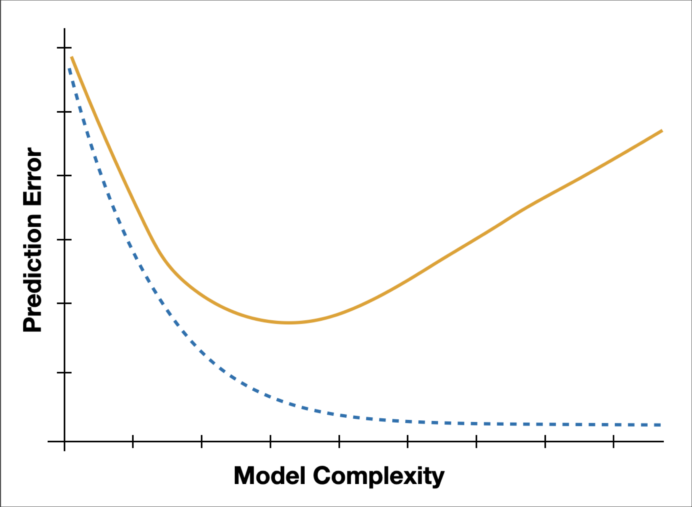

Appendix B: Item Graveyard
Bikes and Scooters 1
As a way to help the environment some cities in the U.S. are adding bike and e-scooter share stations which allow people to rent a bike or e-scooter for commuting or pleasure. The bikes and scooters are often kept at electronic docking stations at multiple locations around the cities. The following graphs were created using data from the Department of Transportation Statistics1 about public use of these shared dock systems in four U.S. cities—Chicago, Minneapolis, Portland, and Topeka.
Which of the four cities had the most bike docks in 2020? Explain how you determined this. Or if you cannot answer it from the visualization, explain why not.
The bar chart shows the the percentage of docks in each city that were bike docks for each year from 2015–2020.

The pie chart was created by plotting the percentage of bike docks for each year in one particular city. Unfortunately, the data scientist has forgotten which city this is. Using the information in the bar chart, identify the city. Explain how you determined this or if you cannot answer it from the visualization, explain why not.

- Which of the four cities had the biggest increase in the number of bike docks from 2018 to 2020? Explain how you determined this or if you cannot answer it from the following line graph visualization, explain why not.

Bikes and Scooters 2
The map below shows the number of cities in each region of the United States that have docked bikes, dockless bikes, or e-Scooters in both 2018 and 2020. Use that information to answer each of the following questions. For each question, explain how you determined your answer, or if you cannot answer it from the visualization, explain why not.

| 2018 | 2020 | |||||
|---|---|---|---|---|---|---|
| Docked Bikes | Dockless Bikes | e-Scooters | Docked Bikes | Dockless Bikes | e-Scooters | |
| West | 17 | 14 | 7 | 13 | 7 | 3 |
| Southwest | 11 | 7 | 5 | 8 | 6 | 4 |
| Midwest | 27 | 5 | 8 | 16 | 6 | 6 |
| Northeast | 17 | 18 | 5 | 10 | 3 | 1 |
| Southeast | 29 | 13 | 9 | 14 | 11 | 11 |
How many cities in the Southeast had e-Scooters in 2018?
In 2020, the Southwest region has more docked bike stations than dockless bike stations.
The majority of regions decreased the number of e-scooter stations from 2018 to 2020.
Across the majority of regions, the trend is that over time, cities tend to be adopting dockless bikes rather than docked bikes.
Across the majority of regions, the trend is that over time, there are fewer cities that are making docked bikes, dockless bikes, and e-scooters available. Explain how you determined this or if you cannot answer it from the visualization, explain why not.
Bikes and Scooters 3
An electric bike, also known as an e-bike, is a bicycle with a battery-powered “assist” that comes via pedaling. An online product recommendation service that tests and reviews products has gathered a representative sample of 15 e-bikes from a single manufacturer and measured their ranges (how far they can go on a full battery without recharging). Based on this sample, they calculated an average range of 60 kilometers, plus or minus 10 kilometers. Suppose you’re in the market for an e-bike and during your research you come across the following two items:
An e-bike with a range of 85 kilometers.
A report from a different product recommendation service that has also gathered data from a different, but also representative sample of 15 e-bikes from this same manufacturer, with a mean range of 85 kilometers.
Which one of these make you doubt the original report more?
Births per Day
A data scientist for a large urban hospital examined a sample of data to estimate the mean number of births that took place on Fridays and Saturdays. The plots below show the number of births that took place on either a Friday or Saturday for that sample.

To estimate the mean number of births that took place on Fridays and Saturdays, the data scientist computed confidence intervals (mean \(\pm\) margin of error) for both days. Unfortunately they forgot which mean and margin of error was associated with each day.
Which mean is associated with Friday? Explain.
- 8350
- 11,800
Which margin of error is associated with Friday? Explain.
- 100
- 280
Movie Budgets 3
The data scientist was asked to use the fitted regression model to make a prediction for the revenue for a horror movie using two different potential budgets; a budget of \(\$25\mathrm{M}\) and a budget of \(\$50\mathrm{M}\) They were also asked to compute a prediction interval for these two predictions to estimate the uncertainty in the prediction. The scatterplot and fitted regression line for Horror movies is displayed below.

Which of the predictions would have a greater predicted revenue associated with it? Explain
- \(\mathrm{budget} = \$25\mathrm{M}\)
- \(\mathrm{budget} = \$50\mathrm{M}\)
- They are the same.
- Not enough information to determine this.
Model Comparison
A data scientist has trained four different classification models (null model, Naive Bayes model, k Nearest Neighbors (kNN) model, and random forest model) on a set of data. The observed responses and the model predictions for a set of 10 observations from a validation set of data are shown in the table below.
| Observed Responses | Null | Naive Bayes | kNN | Random Forest |
|---|---|---|---|---|
| No | No | No | No | No |
| No | No | Yes | Yes | No |
| No | No | No | No | No |
| No | No | No | No | No |
| Yes | No | No | No | No |
| No | No | Yes | Yes | No |
| No | No | No | No | No |
| No | No | No | No | No |
| Yes | No | Yes | Yes | Yes |
| Yes | No | Yes | Yes | Yes |
Are the predictions from the kNN model more, less, or equally as accurate as the results from the null model? Explain.
Training or Validation
The figure shows a plot of prediction error as a function of model complexity for a training and validation sample. Which sample (training or validation) is associated with the orange, solid line? Explain.

The following three items were reworked into one context, as the current Movie Wrangling.
TV Show Wrangling
The two tables below provide data about several TV shows.
| Creator | TV_Show | TV_Show_ID |
|---|---|---|
| Aguirre-Sacasa, Roberto | Riverdale | I |
| Blair, April | All-American | A |
| Dunham, Lena | Girls | L |
| Glover, Donald | Atlanta | B |
| Levitan, Steven | Modern Family | F |
| Lloyd, Christopher | Modern Family | F |
| Murphy, Kevin | Hellcats | E |
| Scheuring, Paul T. | Prison Break | H |
| Sherman-Palladino, Amy | Bunheads | C |
| Sherman-Palladino, Amy | Gilmore Girls | D |
| Star, Darren | Sex and the City | M |
| Star, Darren | Younger | K |
| Watson, Sarah | The Bold Type | J |
| TV_Show | TV_Show_ID | Network | Seasons |
|---|---|---|---|
| All-American | 01 | CW | 4 |
| Atlanta | 02 | FX | 4 |
| Bunheads | 03 | ABC Family | 2 |
| Gilmore Girls | 04 | WB | 7 |
| Hellcats | 05 | CW | 1 |
| Modern Family | 06 | ABC | 11 |
| Ozark | 07 | Netflix | 4 |
| Prison Break | 08 | Fox | 6 |
| Riverdale | 09 | CW | 6 |
| The Bold Type | 10 | Freeform | 5 |
| Younger | 11 | TV Land | 7 |
- Consider the two following sets of pseudocode (ie. code recipe). Would they produce the same results? Explain.
A.
start_with(the Creator table) and_then
add_columns_from(the TV Show table matching_by the TV Show column) and_then
count_of(the number of rows for the CW network)
B.
start_with(the TV Show table) and_then
add_columns_from(the Creator table matching_by the TV Show column) and_then
count_of(the number of rows for the CW network)
- Consider the two following sets of pseudocode (ie. code recipe). Would they produce the same results? Explain.
A.
start_with(the Creator table) and_then
add_columns_from(the TV Show table matching_by the TV Show column) and_then
count_of(the number of rows for the CW network)
B.
start_with(the TV Show table) and_then
add_columns_from(the Creator table matching_by the TV Show ID column) and_then
count_of(the number of rows for the CW network)
Shopping Wrangling
The dataset below contains information on 8 people; we know their names and how many items they purchased online today.
| name | number_of_items | visited_online_retailer |
|---|---|---|
| Miriam | 10 | |
| Marcel | 2 | |
| Ayesha | 0 | |
| Rebecca | 3 | |
| Lola | 0 | |
| Laurence | 1 | |
| Tomos | 9 | |
| Abdul | 0 |
You have been tasked with adding a new column called visited_online_retailer which indicates whether or not each person visited the website of an online retailer (“yes” if they did, “no” if they did not). Is there sufficient information in this dataset to generate this new column? Explain.
Park Wrangling
The data set park_visits contains the number of annual visitors to 376 national park sites in the United States from 1904–2016. The data were originally collected from the National Park Service. There are 20,920 total records in the data set, since the parks were open for the entire date range. A few rows of park_visits data are shown below.
| year | state | park_site | visitors |
|---|---|---|---|
| 1904 | AR | Hot Springs National Park | 101000 |
| 1904 | CA | Kings Canyon National Park | 1000 |
| 1904 | OR | Crater Lake National Park | 1500 |
| \(\cdots\) | \(\cdots\) | \(\cdots\) | \(\cdots\) |
| 2016 | WY | Devils Tower National Monument | 496210 |
| 2016 | WY | Fort Laramie National Historic Site | 57444 |
A data scientist would like to find the most popular park in each state in 2016. To do so, they decided to create a new data table named most_visited_2016 that includes the national park site in each state with the most visitors in 2016. The final table will include 51 rows (one for each state and Washington D.C.) and the columns year, state, park_site and visitors. Four of the 51 rows of the table are shown below.
| year | state | park_site | visitors |
|---|---|---|---|
| 2016 | AK | Klondike Gold Rush National Historical Park | 912351 |
| 2016 | AL | Little River Canyon National Preserve | 462700 |
| 2016 | AR | Buffalo National River | 1785359 |
| \(\cdots\) | \(\cdots\) | \(\cdots\) | \(\cdots\) |
| 2016 | WY | Yellowstone National Park | 4257177 |
Arrange the steps to get from the original data set park_visits to the final table most_visited_2016.
Steps:
- Start with
park_visits - FILTER(
year== 2016): Filter for observations in 2016 - GROUP_BY(
state): Group by state/Perform subsequent lines of code within each state - ARRANGE(DESC((
visitors)): Sort the number of visits in descending order - SLICE(1) : Take the first observation.
- End with
most_visited_2016
Data Cleaning
A researcher randomly selects 10 students in a school and collects data about their age and number of siblings. They enter the data into a spreadsheet and are interested in calculating descriptive statistics. The software that they are using displays the data as shown below.
| row | X1 | X10 | X3 |
|---|---|---|---|
| 1 | 2 | 11 | 1 |
| 2 | 3 | 12 | 3 |
| \(\cdots\) | \(\cdots\) | \(\cdots\) | \(\cdots\) |
| 8 | 9 | 12 | 2 |
| 9 | 10 | 8 | 0 |
| 10 | Total | 113 | 21 |
Would it be safe to assume that the average age of children in the sample is 11.3? Explain.
If you could change the way that the data are displayed in this software, would you change anything? If yes, then list the thing(s) that you would change.
Data from: https://data.bts.gov/d/7m5x-ubud/visualization↩︎